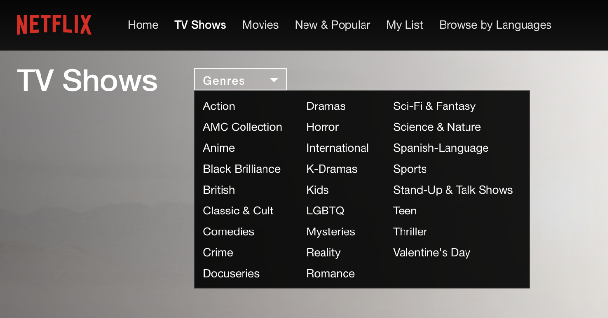
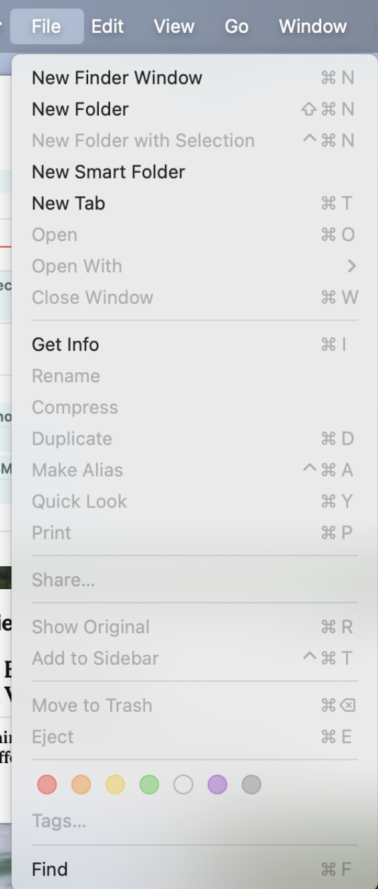
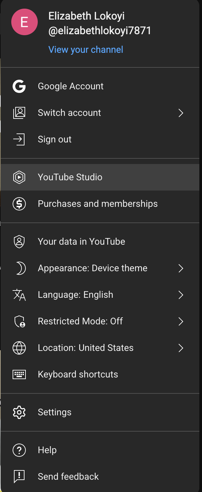
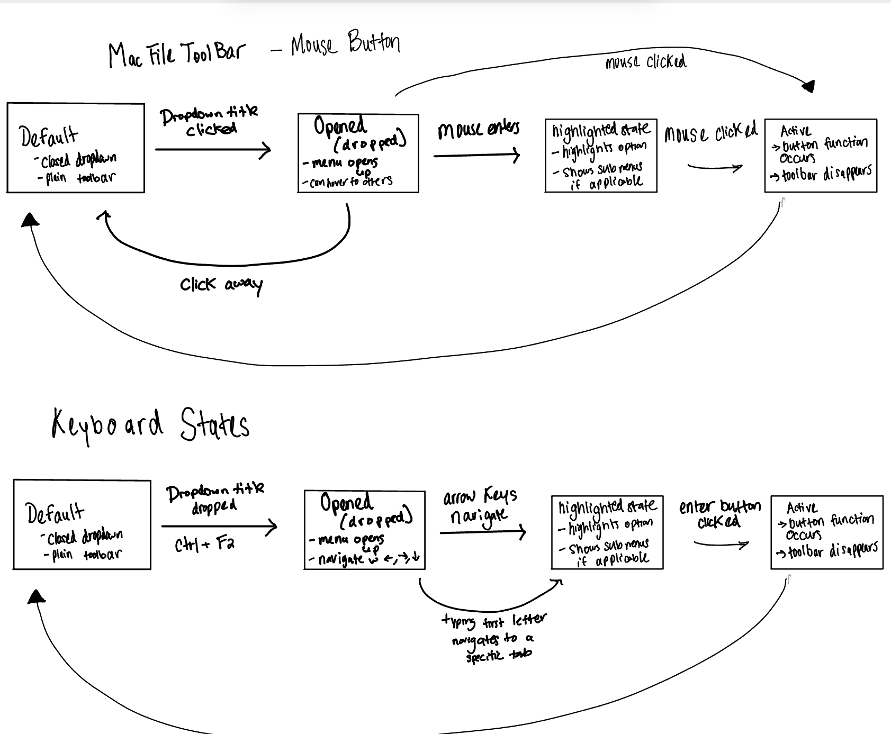
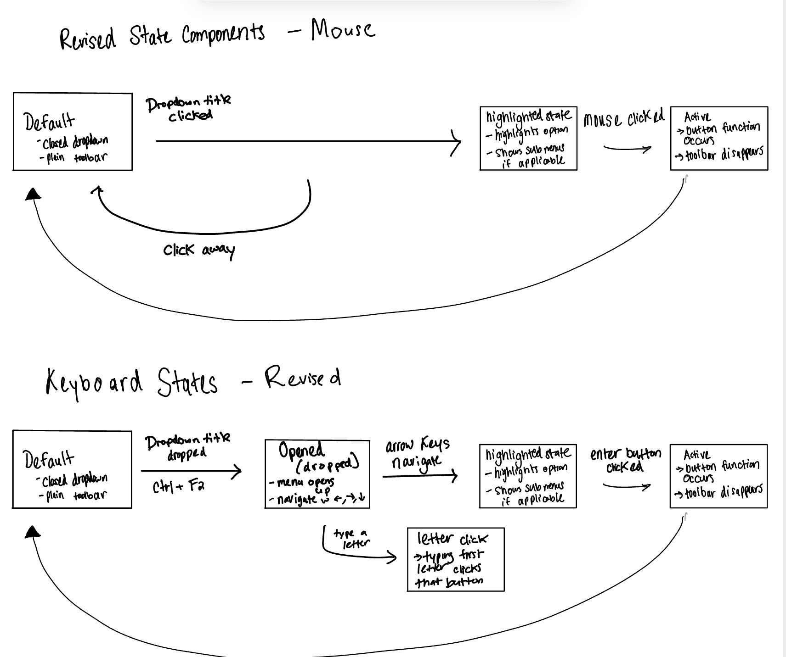
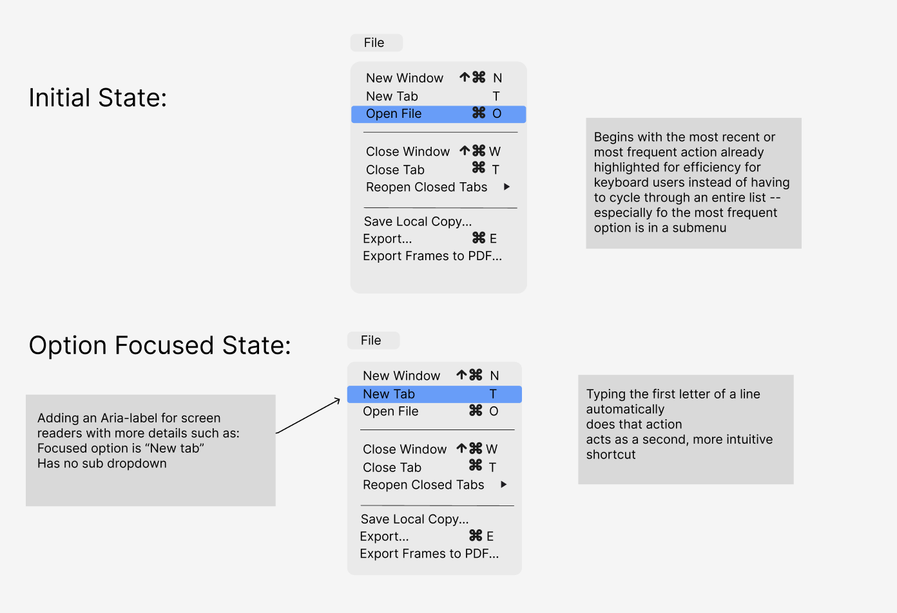

Project Background
This case study focuses on the research and prototyping work I did to assess the accessibility challenges found in dropdown menus. I looked at the component across different platforms —particularly in the Mac File Navigator—and the steps I took to address them. While components like the dropdown might appear simple or intuitive, they can often exclude users relying on keyboards or screen readers. My main goals were to identify gaps in dropdown functionality, consider tradeoffs and compromises, and propose and design a more inclusive solution.
Accessibility Audit
I took a look at and evaluated the dropdown menus in three applications: Netflix, Youtube, and the Mac file navigator. Here are photos of each of the components in different states, along with my observations.
  I compiled my observations into two tables that looked at the output and input state. My observations revealed a pattern of prioritizing mouse users especially on the web-based streaming platforms.


Redesign Approach
I chose to take a closer look at and redesign the Mac File Navigator dropdown with the goal of making it easier for those using keyboards or assistive technologies.
Before approaching my redesign, I had to create detailed state models of what the user experience looks like with as much detail as possible. First, I created a state model for the mouse and keyboard interaction in the original dropdown. This included the default state, the focused state, and the expanded action state.
Next, I created a state model intentionally creating tradeoffs to make certain things easier for keyboard users.
Considering the potential tradeoffs and improvements, I created two designs for the default and expanded state of the Mac File Toolbar.
Initial State Enhancements
- Maintaining Visible focus ring for keyboard and mouse users
- Adding more robust and detailed ARIA label
- Focusing on the most recent or most frequent otion upon opening the dropdown
Expanded State Improvements
- Typing the first letter of an option automatically executes the option for efficiency
- Arrow key as well first-letter navigation
- Clear highlight on focused or selected options
These changes all work together to make the dropdown easier to use regardless of how someone might interact with their device.
Reflection and Takeaways
Through evaluating dropdown components across platforms, I observed that many drop-downs perform well in certain areas of usability and accessibility.
- They mostly include a visible keyboard focus ring and basic arrow key navigation.
- These features made the component accessible at a surface level.
However, my redesign built on that foundation by improving how the dropdown responds to using the keyboard or a screen reader.
While the dropdowns were good for keyboard users, they still favored mouse users in terms of efficiency and effectiveness.
Using Kat Holmes’ concept of “mismatch,” I can understand how my revisions attempted to address the mismatch for keyboard users of seeing all the options and wanting to immediately execute the desired option.
- Mouse users can click what they want, almost like grabbing, whereas keyboard users have to cycle through options even though they know what they want.
- Allowing users to navigate by typing the first letter empowers both screen reader and keyboard users with faster, more predictable control.
- It also streamlines use for everyone else.
Reflecting on my analysis from Parts 1 and 2, two things stood out:
- Firstly, the Netflix dropdown navigation was connected to the whole page, making it difficult to backtrack or reconsider different options on the page.
- Another inaccessibility issue is the lack of clarity as to how to actually select a focused option.
Conclusion
It’s clear that among mouse, keyboard, touch, and screen reader users, mouse users are prioritized in specific component design. This bias makes interfaces inflexible and inaccessible. This project offered me the insight that accessibility isn’t about unnecessary extra features, but about considering all of the possible ways the world could exist for anyone.